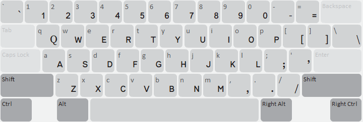
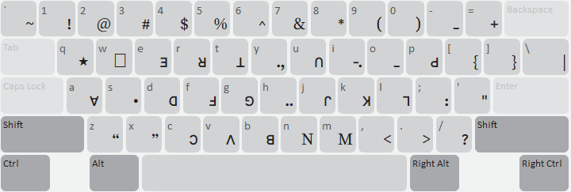

This keyboard is a mnemonic Lisu keyboard layout following a QWERTY key arrangement.
The word-forming modifier letter U+02CD is on the SHIFT+O key.
U+2010 HYPHEN is on the hyphen key and the SHIFT+hyphen key. It is preferred to U+002D HYPHEN-MINUS for the dash used to separate syllables in names, as its semantics are less ambiguous than U+002D.

